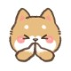
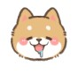
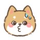

강아지 표정 데이터 전부 보기
지금 보시는 우리 강아지에 표정을 알아 보세요.
1. 같이놀자
ʕ•ﻌ•ʔ
::너무 기분이 좋고 흥분한 마음을 가라앉히기 위해 하는 표정으로 나이가 조금 들고나면 자연스레 이런 표정도 줄어들 겁니다..
주인 나 너무 행복해.. 진정이 안돼 … 고마워 주인 .. 왈
2.갸웃등
( •́ ̯•̀ )
:: 반려견이 고개를 갸웃 거리는 모습을 할 때가 있는데, 이는 사람과 마찬가지로 무슨 일이지? 이건 뭐지? 하는 생각을 하고 있다고 볼 수 있다.
주인 뭐라고 말한 거야? 뭐해?? 궁금해.. 왈
3.낙담
❛ε ❛
:: 이 표정은 너무 긴장되고, 힘들어요를 의미합니다. 예를 들어 샤워를 하거나 낯선 공간을 갔을 때 불안해서 하는 표정으로 앉아주는 건 어떨까요?
주인 여기 너무 긴장돼, 나를 지켜줄 거지.. 왈
4.놀람
ｰ̀εｰ́
:: 깜짝 놀랐어요.
주인님 너무 놀랐어요. 저를 안아줄래요? 왈
5.땀
ಡ ̯ ಡ
:: 이것은 주인한테 관심을 표현 하기의 한 표현이기도 합니다.
아이고 주인님 … 왈
6.만족
(❀╹◡╹)
:: 나는 행복합니다. 지금 주인님과 같이 있는 시간 행복을 느끼고 있어요.
최고예요 주인님 …. 왈
7.말똥말똥
⁰▿⁰
:: 이 표현은 호기심이거나 사랑을 표현하는 것입니다. 이에 주인을 관찰하거나 눈을 마주치는 행동을 하기도 합니다. 주인이 너무 좋아서 빤히 바라보는 경우가 많습니다.
주인 나랑 놀자.. 헤헤 … 왈
8. 매스꺼움
๑･̑◡･̑๑
:: 강아지는 육체적인 고통에 민감합니다. 혹시 열이 많이 받았거나 환경적인 스트레스 및 특정 식품에 첨가물이 변화되지 않았나요? 혹시 너무 심하면 차가운 얼음 팩으로 머리를 식혀 주거나 목 뒤쪽을 따뜻하게 해주세요.
주인님 충분한 물이나 조용히 있게 해주세요. 흑흑 … 왈
9.몰라잉
(ﾟヘﾟ)？
:: 어린 강아지의 경우 많이 보이는 표정입니다, 욕구 또는 가려움에 의해 발생하는 표정이지만 조금 성숙해지고 그러면 차츰 좋아질 겁니다.
주인님 창피해요.. 왈
10.미안함
( ๑˃̶ ꇴ ˂̶)♪⁺

:: 이 표현은 미안함을 느끼거나 정신적인 스트레스를 느끼고 있을 때 하는 표정입니다.
주인 미안해.. 왈
11.배가 고픔
( °ټ°)

:: 강아지가 배고픔을 느끼는 것은 본능과도 같습니다. 혹여 영양소가 부족한 사료를 먹이고 있지는 않을까요? 칼로리나 급여량을 한번 확인해 보세요. 체중이 적당한지 아니면 물을 잘 마시는지 한번 확인해 보세요.
주인님 간식.. 밥.. 주세요.. 밥 밥…. 왈
12.무서움
( ˃⍨˂̥̥ )
::낯선 개나 낯선 사람을 만났을 때 주로 보이는 얼굴입니다. 나는 너에게 적대감이 없어!라는 표정이기도 합니다. 또는 잘못을 했을 때 주인으로부터 꾸짖음을 당할 경우 나를 혼내지 마세요. 잘못했어요. 하는 반성의 표현으로도 볼 수 있습니다.
주인 너무 혼내지 마 나 무서워… 미안해.. 왈
13.사랑해요
๑❤‿❤๑
:: 이 표정은 좋아하는 사람에게 마음을 표현하는 것입니다. 이에 혹은 선물을 주거나 몸을 기댄다던가 배를 만지게 합니다. 사랑한다는 표현이니 같이 공놀이나 쓰담 쓰담 해주세요.
주인 님 사랑해요.. 왈
14.슬픔
ಡ︷ಡ)
:: 관심을 표현하는 표정입니다. 누구든 실수를 하지만 이것은 주인한테 관심을 표현 하기의 한 표현이기도 합니다.
주인님 속상해요.. 왈
15.실수
(๑•́o•̀๑)

:: 관심을 표현하는 표정 입니다. 누구든 실수를 하지만 이것은 주인한테 관심을 표현 하기의한 표현이기도 합니다.
주인 미안해.. 왈
16.아픔
(｡♋‸♋｡)
:: 몸이 안 좋은 것을 표현합니다. 이에 활동이 줄어들고 누워있는 시간이 많아지는 것이 보인다면, 가까운 동물병원에 가보세요. 사랑하는 우리 강아지의 컨디션을 점검하는 것 또한 주인이 해야 할 일이죠.
주인님 아파요.. 같이 있어 주세요.. 왈
17.어지러움
(๑′m‵๑)
:: :: 무엇인 가 원하는 것이 있거나 혹은 주인의 관심을 끌기 위해서 일 수 있습니다. 이럴 때는 특수 장난감 등을 제공해서 강아지를 활발하게 움직이게 해주는 것이 좋습니다.
주인님 슬퍼요. 저와 함께해주세요.. 왈
18.웃김
(๑ᵕ⌓ᵕ̤)
:: 이 표정은 복종의 의미라는 해석이 있어요. 예로 서열 다툼에서 진 쪽이 복종의 의미로 입술을 들어 올리며 웃는 것 같은 표정을 진다고 합니다.
주인님 진정하세요. 난 주인님뿐이에요.. 왈
19.장난
ᕙ(•̀‸•́‶)ᕗ
:: 혼자 집을 지키는 시간이 길거나, 주인이 평소 놀아주지 않아 심심하게 내버려졌을 때 보일 수 있는 행동으로, 외롭고 심심해 나에게 관심 좀 가져줘!라고 말하고 있는 것입니다.
주인님 놀아주세요, 간식 은 언제 줄 거야? 나 너무 심심해.. 왈
20.졸림
ఠ̥̆,ఠzZ
:: 피곤하고 함을 의미하기도 하지만 주인에 대한 믿음이 있다는 것을 의미하기도 합니다. 나는 당신과 함께 있으니 안심됩니다.당신과 함께 있으니 안심 됩니다.
주인님 나 너무 피곤해요.. 주인님 믿어요. 날 지켜주세요.. 왈
21.좋음
✦‿✦
:: 이 표정은 당신을 신뢰하고 따른다는 의미입니다. 예를 들어 강아지의 머리를 쓰담어 주거나하면 나오는 표정이죠.
주인님 고마워요. 지금 함께 있어줘서.. 왈
22.통곡
o̴̶̷᷄﹏o̴̶̷̥᷅
:: 혼자 있는 시간이 길어짐에 따라 외로움기 많아져서 우울증에 의한 표정입니다. 강아지가 우는 이유는 관심을 끌기 위해서 도 있지만 그리움으로 인한 슬픔이 재일 큽니다.. 주말에는 조금 더 시간을 같이 있어주는 것은 어떨까요?
주인님 너무 보고 싶었어요. 바쁜 시지만 저와 놀아주세요.. 왈
23.행복
(๑°ㅁ°๑)‼✧
::난 지금 이 시간이 좋아요. 이 표정은 애정의 표현이자 복종의 의미입니다, 배를 만져주면서 사랑 표현을 해주세요.
주인님 나를 사랑해 주세요. 예뻐해 주세요.. 왈
24.화가남
(╬◣д◢)
:: 그만해!! 에 신호를 보내는 표현입니다. 이는 소유욕 혹은 스트레스에 표현입니다. 강아지가 우리를 힘들게 하는 것이 아니라, 강아지 스스로 힘든 시간을 보내고 있는 것입니다. 조금만 참아주세요.
주인님 잠깐 흥분했어요.. 조금만 참아주세요.. 왈